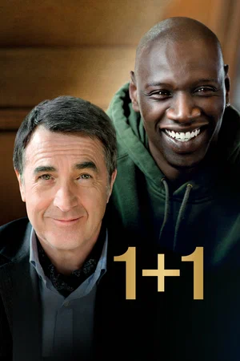
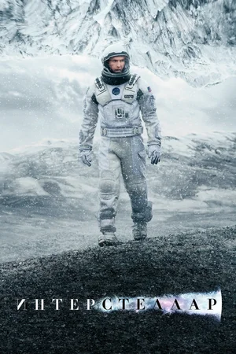
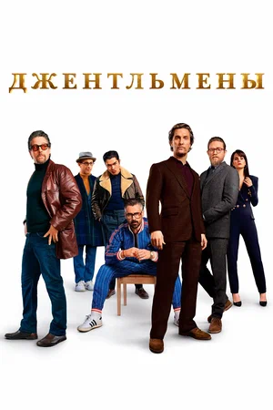
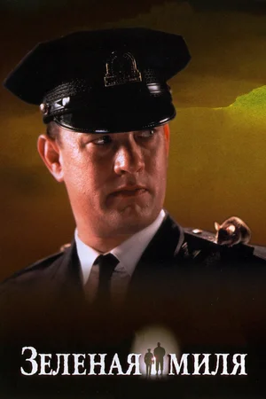
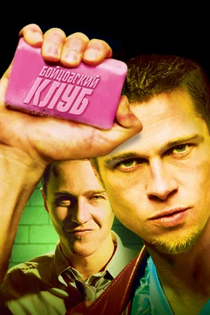
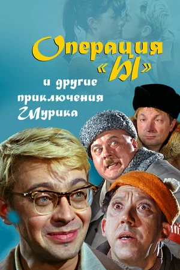
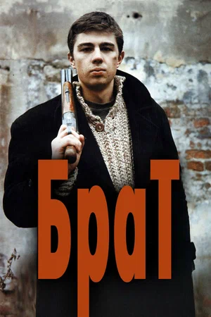

.jpg)





Сотрудник страховой компании страдает хронической бессонницей и отчаянно пытается вырваться из мучительно скучной жизни. Однажды в очередной командировке он встречает некоего Тайлера Дёрдена — харизматического торговца мылом с извращенной философией. Тайлер уверен, что самосовершенствование — удел слабых, а единственное, ради чего стоит жить, — саморазрушение.

Проходит немного времени, и вот уже новые друзья лупят друг друга почем зря на стоянке перед баром, и очищающий мордобой доставляет им высшее блаженство. Приобщая других мужчин к простым радостям физической жестокости, они основывают тайный Бойцовский клуб, который начинает пользоваться невероятной популярностью.
Операция «Ы» и другие приключения Шурика (1965)
Студент Шурик попадает в самые невероятные ситуации: сражается с хулиганом Верзилой, весьма оригинальным способом готовится к экзамену и предотвращает «ограбление века», на которое идёт троица бандитов — Балбес, Трус и Бывалый.

Брат (1997)
Демобилизовавшись, Данила Багров возвращается в родной городок. Но скучная жизнь провинции его не устраивает, и он отправляется в Петербург, где, по слухам, уже несколько лет процветает его старший брат. Данила находит брата, но всё оказывается не так просто — брат работает наемным убийцей.
